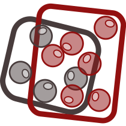
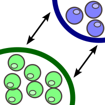
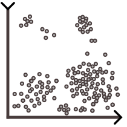
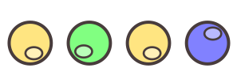
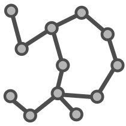

SeuratIntegrate incorporates 11 scoring metrics: 6 quantify the degree of batch mixing  (batch correction), while 5 assess the preservation of biological differences  (bio-conservation) based on ground truth cell type labels.
Below is a table summarising each score’s input and type:
| Score name | Require a cell type variable | Require a clustering variable | Input | Score type |
|---|---|---|---|---|
| Cell cycle regression |  | |||
| PCA regression | ||||
| PCA density | ||||
| ASW batch |  | |||
| ASW | ||||
| ARI | ||||
| NMI | ||||
| cLISI | or  | |||
| iLISI | or | |||
| kBET | or | |||
| Graph connectivity |
(per.component = TRUE) |
Most scores are computed on an embedding
(Seurat::DimReduc object) or a graph (Seurat::Neighbor or
Seurat::Graph object). The exceptions are ARI and NMI,
which compare two categorical variables thus don’t need anything else
than a cell-type and a cluster assignment variables.d anything else than
a cell-type and a cluster assignment variables.
Most scores are based on a cell type label variable. This consists in an estimate of each cell’s type obtained by analysing each batch separately or by using an automatic cell annotation algorithm. This estimate of cell types must be of sufficient quality to be considered suitable as ground truth.